How to find Open Data and Ontologies
Vladimir Alexiev (publications)
4th Open Data & Linked Data meetup, Sofia, Bulgaria
2016-03-29
2D interactive presentation: press O for overview, H for help.
Proudly made in plain text with reveal.js, org-reveal, org-mode and emacs.
Or use normal continuous HTML
1 What is Open Data?
5stardata.info:
★ make your stuff available on the Web (whatever format) under an open license
★★ make it reusable as structured data (e.g., Excel instead of scanned table)
★★★ make it available in a non-proprietary open format (e.g., CSV + Excel)
★★★★ use URIs to denote things, so that people can point at your stuff
★★★★★ link your data to other data to provide context

1.1 Here we Focus on the Higher Levels
Levels 4 and 5 require the use of RDF
- Simple graph data model
- Every piece of data (and every property) has a URL
- Enables easy semantic data interation (but converting to RDF is not so easy)
Where can I buy such mug? W3C DesignIssues/LinkedData (TimBL 2009)

1.2 Application Areas
In this presentation we'll focus on data from these domains:
- Linguistics/NLP
- Cultural Heritage
- (No time: Statistics)
2 Finding Open Data
- Start from https://datahub.io, the global data portal
- It's implemented with CKAN (Github source)
- Many other data portals use CKAN, eg https://opendata.government.bg/
- Most often it's only a starting point
- Explore widely, as you can see in examples below
3 NLP Data
Representing language resources and text annotations as RDF
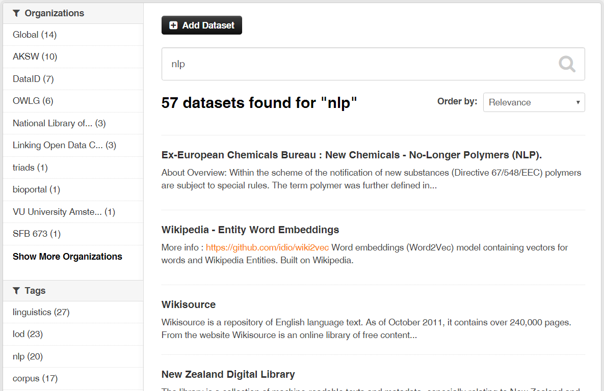
3.1 NLP Data
20 datasets, but IMHO only OLIA and Wordnet on the first page are most important
- Wordnet is an old release (2.0) that's outdated
- OLIA also points to an old release, see later
Use the tags, Luke!
- See tags on the left
- You can get more results by exploring "linguistics", "linguistic"…
- After some research, you can find more salient topics like "llod", "nif", "freme-project"…
3.2 NLP Data: OLIA
Explore OLIA: the first link is ok, but full data set is old (2012-09-16).
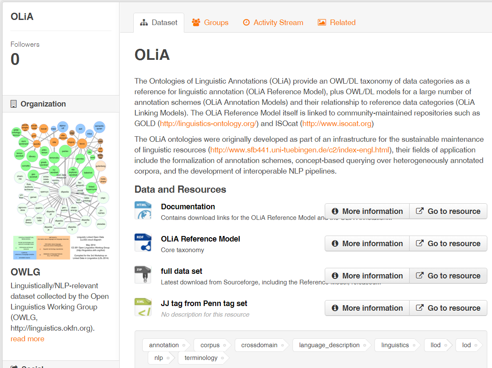
3.3 NLP LOD Working Groups
Look on the left, there's an Organization OWLG:
- gives you more datasets
- slightly misspelt, it's Open Linguistics Working Group (OLWG) at OKFN
There are 3 more Linguistic LD working groups at W3C:
- Ontology-Lexica (OntoLex)
- Linked Data for Language Technology (LD4LT)
- Best Practices for Multilingual LOD (BPMLOD)
3.4 NLP: Linguistic LOD Cloud
http://www.linguistic-lod.org/ by OLWG
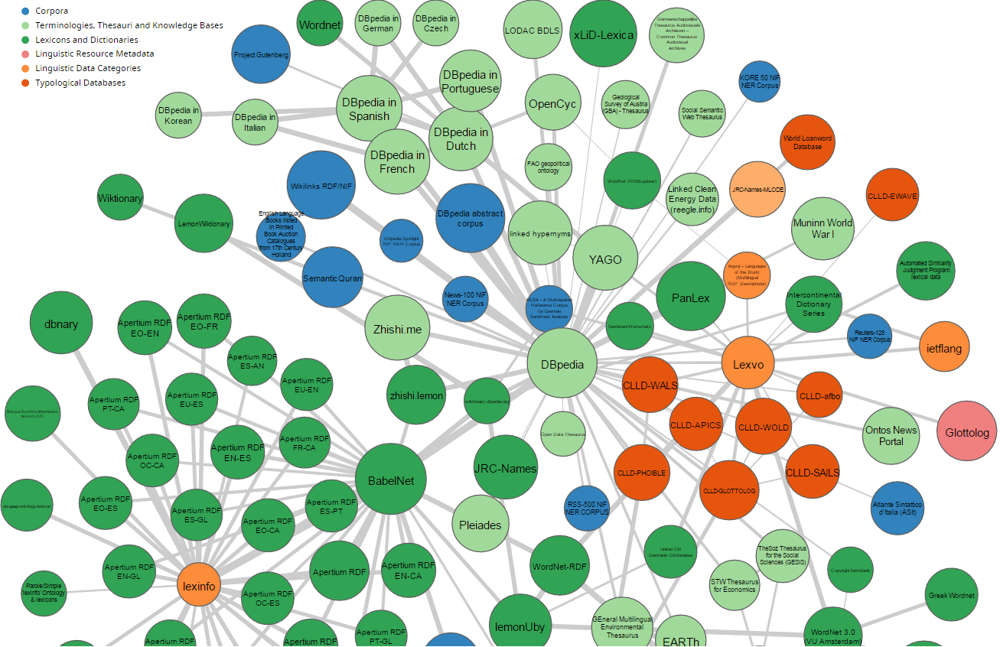
3.5 NLP: Linguistic Hub
If you click on a dataset, you'll find they have their own data hub:
- http://linghub.lider-project.eu/
- Search for OLIA and you'll find 7 related datasets
- Including OLIA Discourse and lemonUby
- Explore Lemon and you'll find the Lexicon Model for Ontologies
- And then Babelnet
3.6 NLP: Babelnet
Babelnet integrates encyclopedic & linguistic knowledge. Pretty amazing: sample sentence

3.7 NLP Tag Cloud
Text Annotation Lexical Resources Corpora Semantic Annotation Opinion/Sentiment Analysis Working Groups: OLWG OntoLex LD4LT BPMLOD Projects: MultilingualWeb LIDER FALCON Multisensor FREME XML schemas: GRaF ITS2 LAF LMF UBY Linguistic Ontologies: FISE ITS2 MARL NERD NIF NLP2RDF OLIA OntoLing OntoTag Penn Stanford FrameNet Lexical Ontologies/thesauri: LEMON LIME OntoLex GOLD ISOcat NERD Lexical resources: BabelNet FrameNet LemonUBY OmegaNet VerbNet Wiktionary2RDF WordNetRDF Corpora: Multitext MASC3.8 Ontotext Linguistic LD Experience
- Using NIF, OLIA, Penn, deep parsing in FP7 Multisensor
- Integrating FrameNet in NIF (LDL 2016)
- Presentation 2014-10-08, intro to a lot of these topics
Collaborative bibliography on Linguistic LOD
- Zotero Group: join so you can collaborate
- Zotero Library: accessible on the web
4 Cultural Heritage Data
- 78 datasets on DataHub for "museum"
- OpenGLAM WG at OKFN provides info and some listings
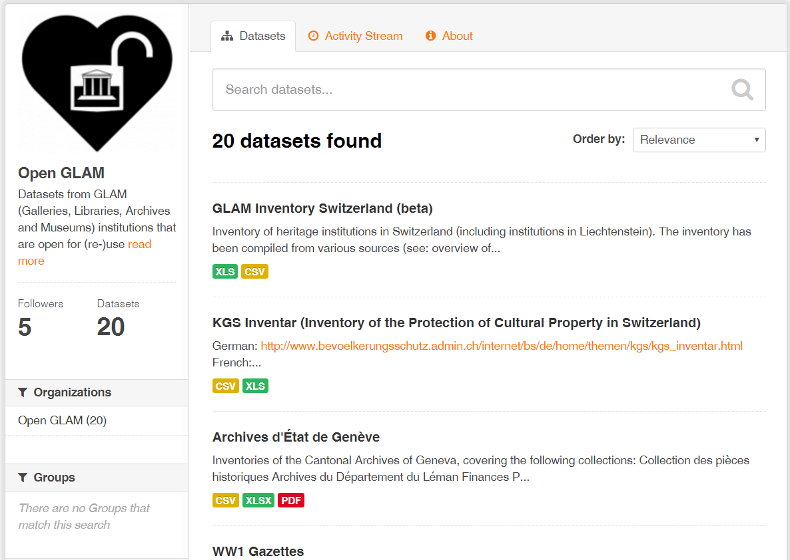
4.1 GLAMs, Hackathons
- GLAM = Galleries, Libraries, Archives & Museums.
Active communities, new datasets, often hackathons…
- Germany: http://codingdavinci.de/
- Switzerland: http://glam.opendata.ch/
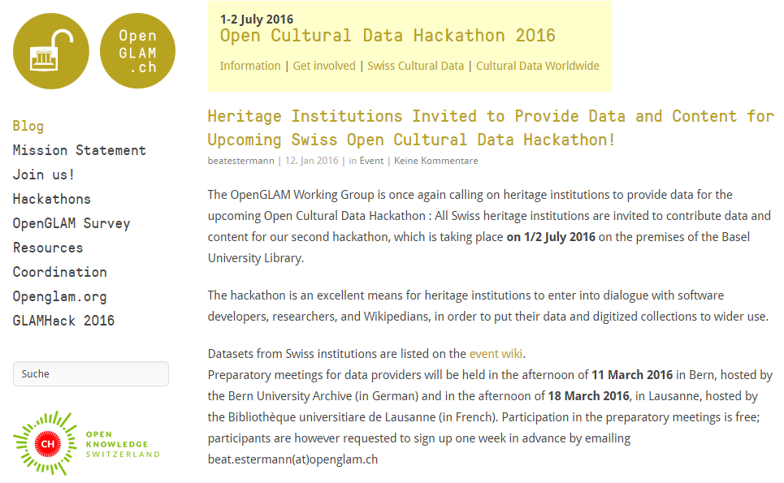
4.2 CH LOD Cloud
Michiel Hildebrand, http://e-culture.multimedian.nl, 2012.
- Shows only thesauri, not eg Museum collections

4.3 Ontotext CH Experience
Ontotext was involved in important #LODLAM (CH LOD) projects
- British Museum collection in CIDOC CRM
- Yale Center for British Art collection in CIDOC CRM
- Europeana EDM SPARQL Endpoint
- Getty Vocabularies as LOD (AAT, TGN, ULAN)
- Now working on Getty CONA & Getty Museum
- Europeana Food and Drink
4.4 Europeana EDM SPARQL Endpoint
http://europeana.ontotext.com/
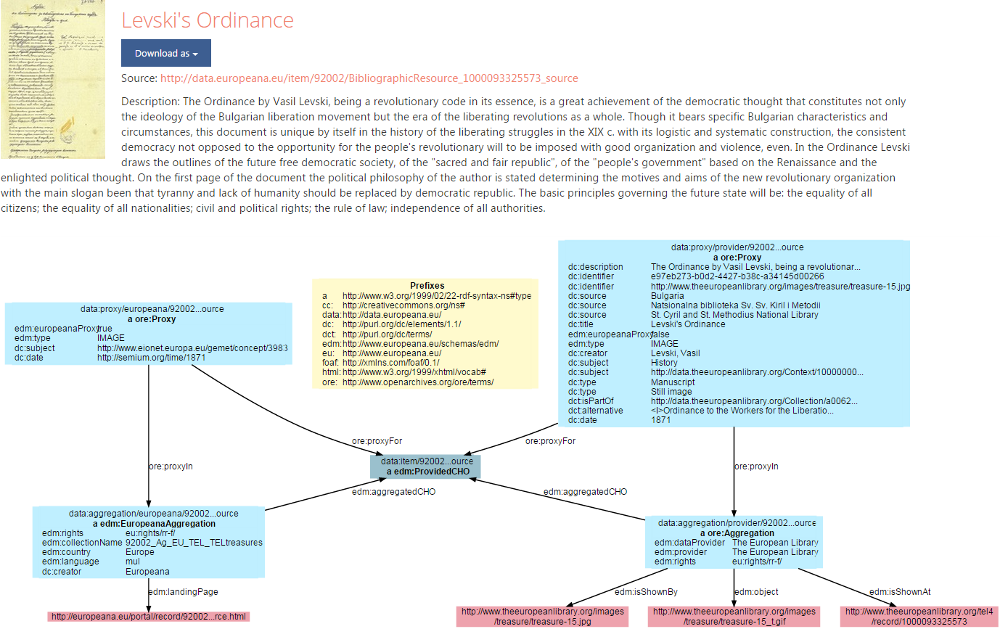
4.5 Getty Vocabs: Home Page
http://vocab.getty.edu. Support through Google Groups and Twitter
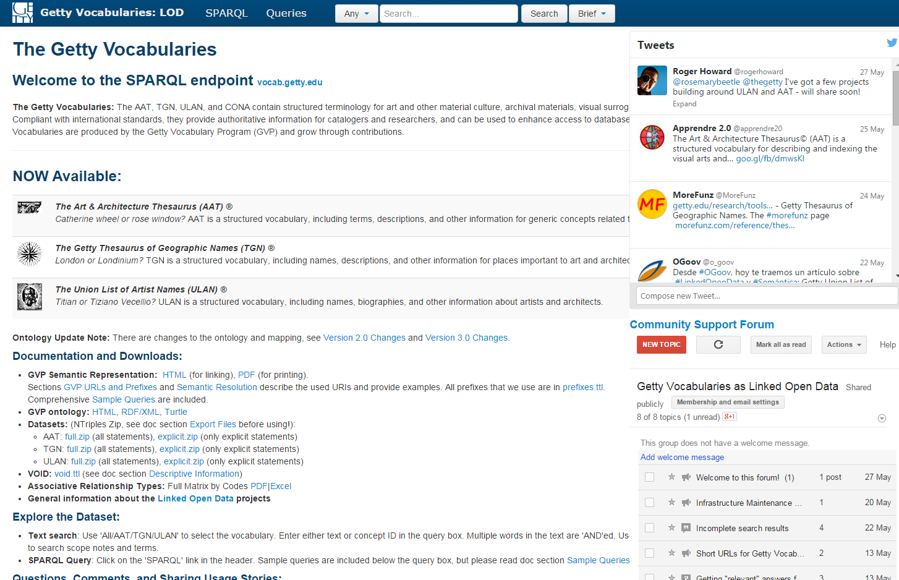
4.6 Getty Vocabs: Sample Queries
http://vocab.getty.edu/queries
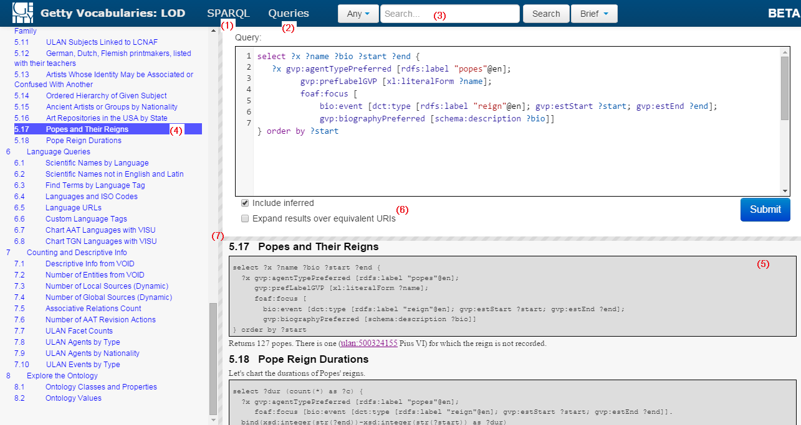
4.7 Getty Vocabs: Documentation

5 Open Data Description
Can't a computer do the exploration for me?
- There are many RDF crawlers & cleaners, eg http://lodlaundromat.org/
- Description data is machine-readable
- Lots of research on automatic description of datasets, finding linked datasets, etc
So in theory, yes. In practice:
5.1 Descriptive Ontologies in Getty
| Prefix | Ontology | Used for |
| adms: | Asset Description Metadata Schema | Dataset description |
| cc: | Creative Commons Rights Expressions | License rights |
| dcat: | Data Catalog Vocabulary | Dataset description |
| dctype: | DCMI Type Vocabulary | Dataset class |
| fmt: | RDF formats used in datasets | Formats of data dumps |
| sd: | SPARQL Service Description | SPARQL endpoint capabilities (future) |
| vaem: | Vocabulary Attaching Essential Metadata | Not used yet |
| vann: | Vocabulary for annotating vocabularies | Namespace and prefix |
| vcard: | vCard (contact info) | Contact info |
| vdpp: | Vocabulary for Dataset Publ Projects | Not used yet |
| voaf: | Vocabulary of a Friend | Linked Open Vocabularies (LOV) |
| voag: | Vocabulary Of Attribution and Governance | Frequency of publication |
| void: | Vocabulary of Interlinked Datasets | Basis descr, LOD registration |
| wdrs: | Protocol for Web Description Resources | Described by from dataset to doc |
| wv: | A vocabulary for waivers of rights | License rights |
5.1.1 VOID
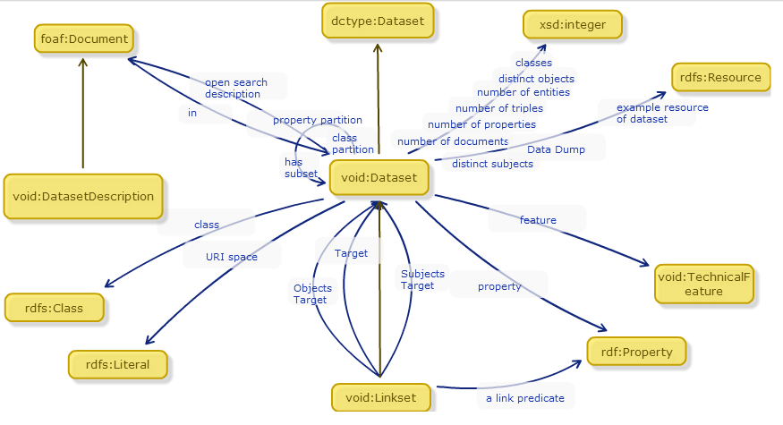
5.1.2 DCAT
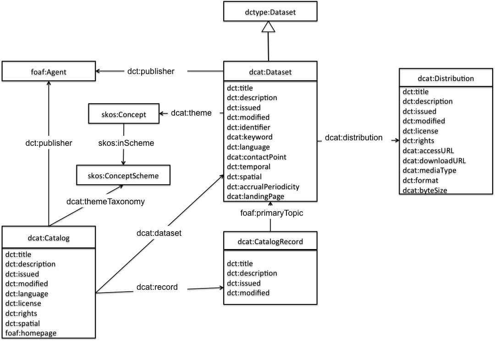
5.1.3 ADMS
ADMS at W3C (adopted from EU SEMIC group)

5.1.4 DataID
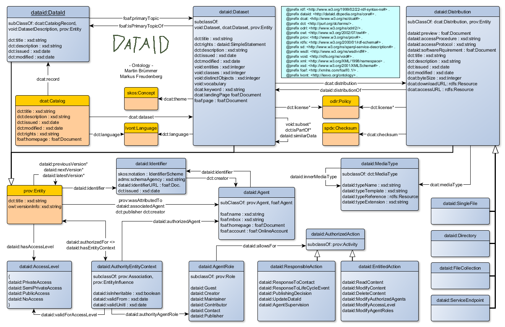
6 Ontology Engineering
- Ontologies are the data schemas of LOD RDF
- Ontology Engineering is about proper modeling
- More often than not, it's about finding, adapting & reusing
- Not creating brand new ontologies
Benefits of reuse
- Can save you a lot of time
- Can make your data more easy to consume by others
6.1 Ontology Reuse in Getty
GVP LOD: Ontologies and Semantic Representation, CIDOC congress, 2014-09
| Prefix | Ontology | Used for |
| bibo: | Bibliography Ontology | Sources |
| dc: | Dublin Core Elements | common |
| dct: | Dublin Core Terms | common |
| foaf: | Friend of a Friend ontology | Contributors |
| iso: | ISO 25946 (latest on thesauri) | iso:ThesaurusArray, BTG/BTP/BTI |
| owl: | Web Ontology Language | Basic RDF representation |
| prov: | Provenance Ontology | Revision history |
| rdf: | Resource Description Framework | Basic RDF representation |
| rdfs: | RDF Schema | Basic RDF representation |
| schema: | Schema.org | common, geo (TGN) |
| skos: | Simple Knowledge Organization System | Basis vocabulary representation |
| skosxl: | SKOS Extension for Labels | Rich labels |
| wgs: | W3C World Geodetic Survey geo | Geo (TGN) |
| xsd: | XML Schema Datatypes | Basic RDF representation |
6.2 Own Getty Ontology
http://vocab.getty.edu/ontology
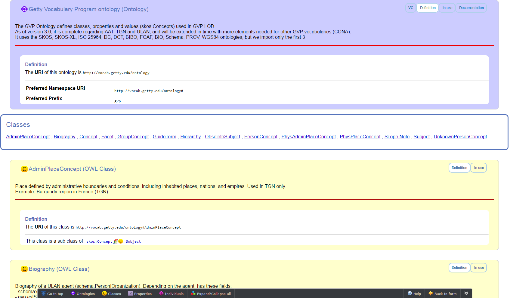
7 Finding Ontologies: Linked Open Vocabularies
http://lov.okfn.org/dataset/lov/: 542 vocabs (ontologies), 52k terms (classes, properties), 581 agents (people, orgs)

7.1 Data About Each Vocabulary
Dates, Versions, Creators, Statistics, related Vocabs… http://lov.okfn.org/dataset/lov/vocabs/iso-thes
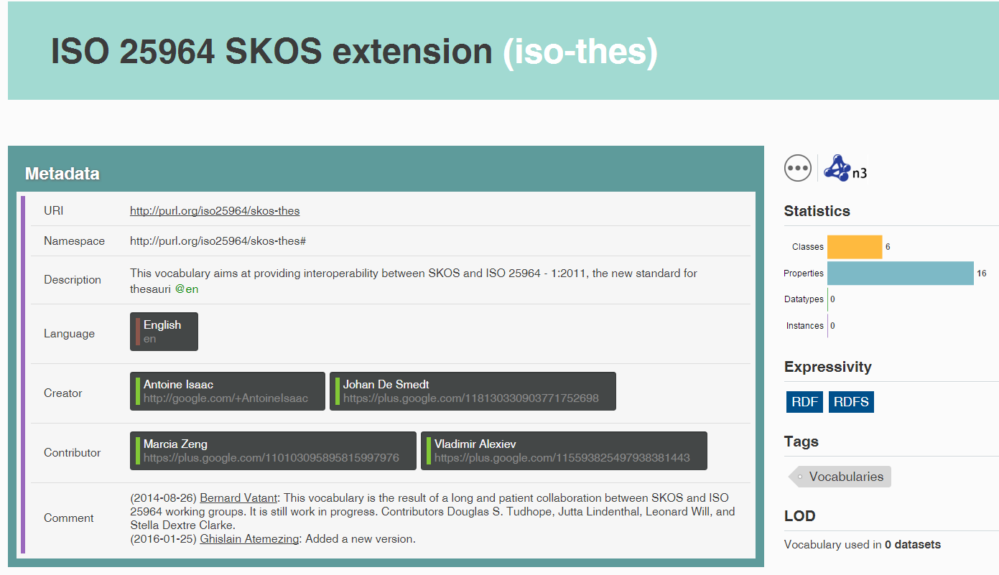
7.2 VOWL Visualization
http://vowl.visualdataweb.org/webvowl/#iri=http://vocab.getty.edu/ontology
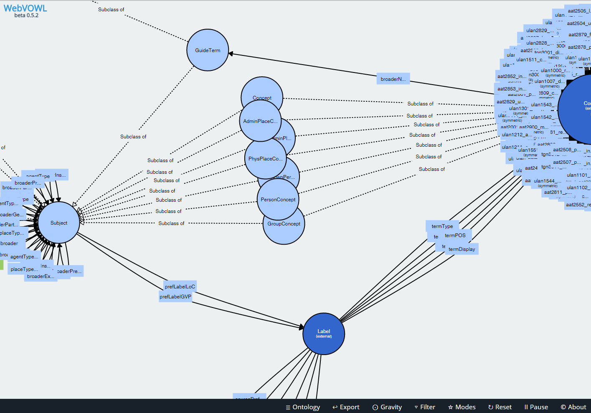
7.3 LOV Community
https://plus.google.com/communities/108509791366293651606
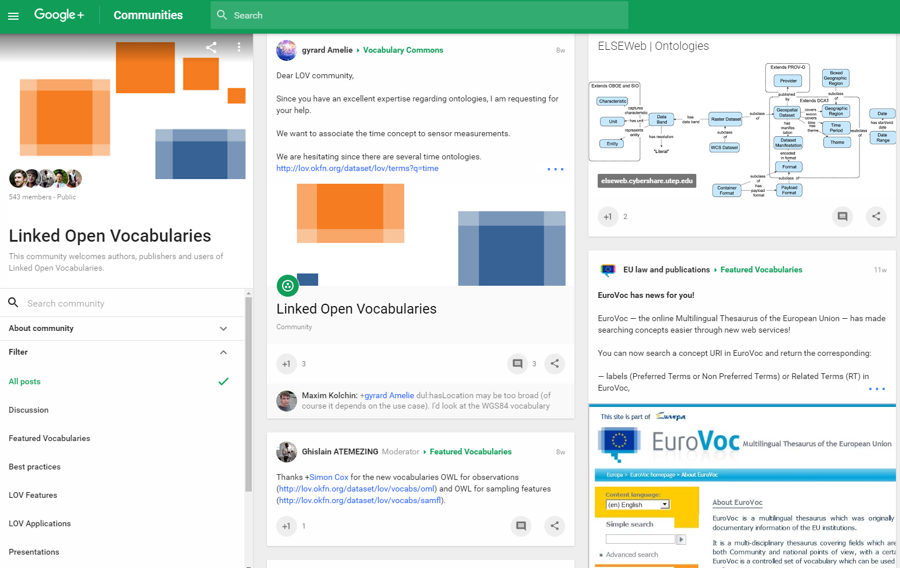